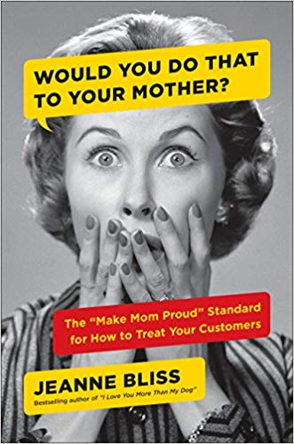
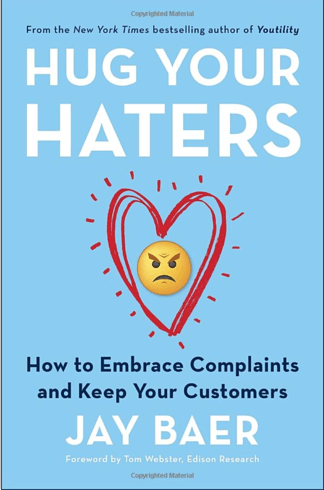
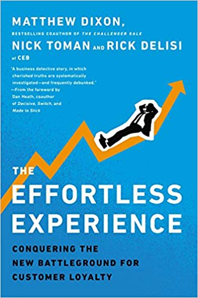
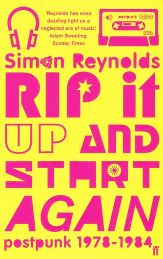

“Would You Do That to Your Mother?
by Jeanne Bliss With 32 case studies and examples from more than 85 companies this book shows why “Make Mom Proud” companies outperform their competition, and how to make this possible. A new book from Bliss, it provides a five-step guide to customer experience and culture transformation. Using comics and a “make-mom-proud-ometer” quiz this book is as accessible as it is informative.
Purchase on Amazon here.“Hug Your Haters: How to Embrace Complaints and Keep Your Customers”
by Jay Baer Jay Baer is a CX and content marketing expert, who made the revolutionary statement, “Haters are not your problem. . . . Ignoring them is.” This book teaches you about the two types of complainers, offstage haters and onstage haters, and how to deal with each group and turn bad news into good outcomes. Every solution is based on case studies from businesses of all sizes, and comes with a complete playbook of how to respond to customers. Plus, Baer’s hilarious writing style and stories will keep you entertained and informed.
Purchase on Amazon here.“The Wallet Allocation Rule”
by Timothy Keiningham, Lerzan Aksoy and Luke WilliamsCo-authored by none other than Qualtrics’ Principal, CX Strategy and Thought Leadership, Luke Williams, this book quickly became a New York Times Bestseller thanks to its revolutionary approach for linking brand perception and share of wallet. It addresses the fact that traditional metrics like NPS and CSAT have been hard to correlate with share of wallet and sets out a new approach that allows organizations to calculate the precise impact of brand positioning on the metric that matters most – how much consumers spend with your brand.
Purchase on Amazon here.“The Effortless Experience"
by Matthew Dixon, Nick Toman and Rick DeLisi It is often said that the customer is always right. Turns out the customer doesn’t want to be right as much as they want smooth service. Dixon and his colleagues at CEB challenge customer service norms and claim that loyalty is creating by proving consistent service, day-in, and day-out. In addition, they provide tools and templates to decrease churn, improve service, and reduce costs, so you can start implementing these principles into your business right away.
Purchase on Amazon here.England's Hidden Reverse
by David KeenanBased on several years' worth of exclusive interviews and unprecedented access to all three bands' personal archives, this is the first, definitive, biography of Coil, Current 93 and Nurse With Wound. Together, the bands represent the real English underground in all its sexual, cultural and artistic variety. A shadowy scene whose work accents peculiarities of Englishness through the links and affinities they've forged with earlier generations of outsiders.
Purchase on Amazon here.Rip it Up and Start Again: Postpunk 1978-1984
by Simon Reynolds Rip It Up and Start Again is the first book-length exploration of the wildly adventurous music created in the years after punk. Renowned music journalist Simon Reynolds celebrates the futurist spirit of such bands as Joy Division, Gang of Four, Talking Heads, and Devo, which resulted in endless innovations in music, lyrics, performance, and style and continued into the early eighties with the video-savvy synth-pop of groups such as Human League, Depeche Mode, and Soft Cell, whose success coincided with the rise of MTV.
Purchase on Amazon here.